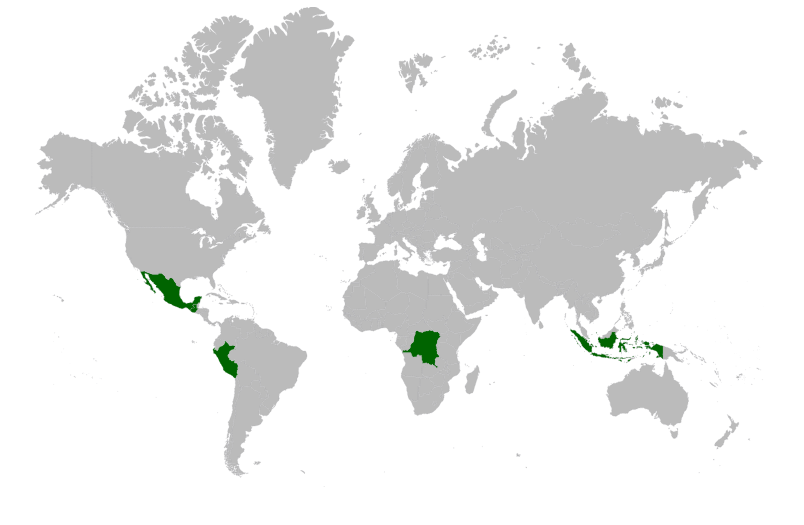

Women scientists for environmental justice
Indigenous knowledge and science for a truly sustainable future.
 Over the last century, humanity has seen an explosion of scientific progress and commodities production. Correspondigly, part of the world population experienced an improvement of life conditions. This transformation happened, and still does, at the expense of people and territories located far from the urban metropoles, where most of the resources are consumed.In these remote places, countless living organisms have adapted in equilibrium with their ecosystems. So did human indigenous populations, these ancestral communities thrived for centuries, living in harmony with Nature, depending on it in a respectfull and sustainaible relationshion. The abrupt changes that Earth faces today threaten ecosystems survival as well as indigenous populations life and legacy.
The contemporary and exponentially increasing technological power, that originates from and is boosted by scientific knowledge and progress, allows to extract resources at extremely fast and unsustainable rates. The price to pay for such a seemingly unlimited growth is poverty and inequity for large part of the global population, together with environmental degradation, pollution and anthropogenic climate change. Indigenous populations and rural communities living in close contact with Nature pay the highest price for contemporary development. They are the most vulnerable and exposed to the effects of climate change, resource predation, and unsustainable growth. These people are forced to change their lifestyles, to resettle, relocate and even migrate or die because of their homes and living source being compromised and disrupted by the greed of post-industrial economical powers.
In this scenario, science can become a transformative force if used in cooperation and respect of traditional knowledge. Decolonizing science is a crucial step in the long way to environmental and social justice.
In this interviews series, we speak with women scientists and activists that work every day in close contact with indigenous populations to let science and law be an instrument to achieve environmental, gender and social justice. Women that live in first person the risks and the damages caused by resource predation and anthropogenic climate change. Women that fight every day from the local to the global scale for human and environmental rights to limit and stop the extractive machine.
Introduction
Science and activism for environmental and gender justice.
Science and activism for environmental and gender justice.
Forests and supermarkets
Why is the lifestyle of indigenous populations truly sustainable?
Why is the lifestyle of indigenous populations truly sustainable?
Rich lands but poor people
How do extractivism and climate change threaten life of indigenous population and rural communities.
How do extractivism and climate change threaten life of indigenous population and rural communities.
Another science is possible
Taking action on a changing Earth.
Taking action on a changing Earth.
Conclusions.
Pathways for sustainable futures.
Pathways for sustainable futures.
All interviews have been carried out by The Scienze Zone, within the european project Boosting Green Education at School (KA2 strategic partnership). Editing and video production by Laboratorio Fujakkà.